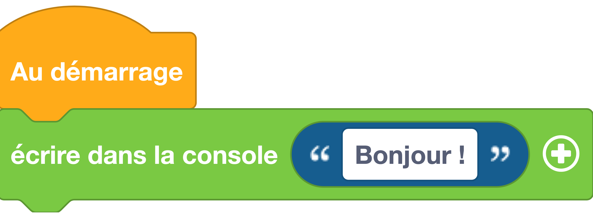

Écrire dans la console
Permet d'écrire des données dans le port série (appelé également console ou encore REPL). Le port série permet d'échanger des données entre la carte Galaxia et l'ordinateur grâce à la liaison USB. Lorsque vous utilisez l'interface Vittascience, vous pouvez voir les données reçues de la carte grâce au bouton REPL situé en bas de l'interface.
Exemple avec des blocs

Exemple du code
# print() fait partie du langage MicroPython
# pas besoin d'importer un module
# Affichage d'un message avec la fonction print()
print("Bonjour !")
Aller plus loin
Dans l'exemple ci-dessus, nous utilisons la fonction print qui fait partie du langage MicroPython (donc pas besoin d'importer un module pour l'utiliser). Cette fonction peut prendre un ou plusieurs paramètres détaillés dans la documentation MicroPython.